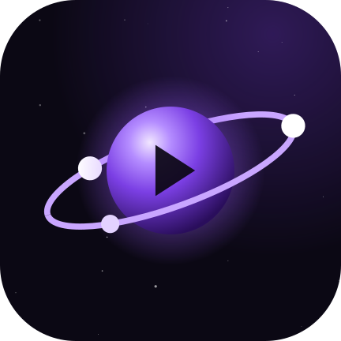

Every server, one library
Movies and shows from all your servers, merged. A title on several servers shows once and plays from the highest-ranked one that answers. Its progress goes to every copy.

PlexVersePlexVerse merges the movies and shows of every Plex server your account reaches, plays each title from the best server that has it, and gives everyone in the house their own profile, including a Kids mode a child can't wander out of.
← → to move, Space to pause, N / D for night and day. Rendered from the app's own screenshot tests, with sample titles.
What it does
No recommendations, cast lists or reviews. Just your libraries, from every server, played the best way your TV can.
Movies and shows from all your servers, merged. A title on several servers shows once and plays from the highest-ranked one that answers. Its progress goes to every copy.
Profiles come from Plex Home, with their own watched state, restrictions and PINs. Hold Back on Home to switch.
Big posters from the libraries a grown-up picked, an age ceiling, Surprise me!, and a limit on episodes in a row. Leaving it needs a grown-up: hold Back for 3 seconds, then a PIN.
Movies and Series fill themselves. Add Documentaries, Anime or anything else, pin one to the menu, and move any library into a category or hide it.
Every server at once, including episode descriptions. Type it, or say it into the remote's mic.
A deep-space night sky and a soft cloudy day. Auto switches at sunset and sunrise, for wherever the TV is.
Plays through the TV's hardware decoder and passes audio through to your receiver as a bitstream when it can. Skip intro, chapters, preview thumbnails, and audio and subtitle choices per show.
Screens crossfade once their content is ready, the sky is drawn once, and focus lifts a card with a shadow. It's built to run at 60 fps on a TV's modest hardware.
OK plays. Hold OK for a short menu: resume, mark watched, favourites, Play from…, and Info.
Built on Simplex
PlexVerse began as a branch of Simplex, embergabor's deliberately simple Android TV client for Plex: direct play, audio passthrough, no bloat. The Plex connection, the player and the cards come from simplex-core, used as published to simplex-maven.
Simplex on GitHubInstall
Built for a Sony Bravia (Google TV) sending audio over eARC to an AV receiver, but it should run on any Android TV.
Get the latest plexverse-<version>-release.apk from GitHub. Each release lists what changed.
Enable network debugging on the TV, then install it from a computer:
adb connect <tv-ip>:5555 adb install -r plexverse-<version>-release.apk
./gradlew assembleRelease adb install -r app/build/outputs/apk/release/app-release.apk